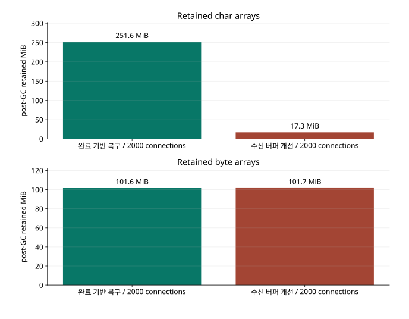

STORYBRIDGE · 설계와 검증
WebSocket 수신 버퍼의 메모리 사용량 개선
Tomcat 연결별 버퍼 선할당을 partial message 처리로 변경
유휴 연결 수를 늘리는 과정에서 Tomcat의 문자 배열이 연결 수에 비례해 증가했으며, 작은 ACK만 받는 연결에도 최대 메시지 크기의 버퍼가 할당되고 있었다. 이에 partial message를 사용해 기본 버퍼를 줄이고, 큰 입력을 조립할 때만 별도 메모리를 예약하도록 변경했다.
2,000연결의 post-GC 진단에서 char[] 메모리가 약 264MB에서 18MB로 감소했다. 미완성 입력에는 전역 메모리 상한과 timeout을 적용했으며, 변경 후 4,000개 유휴 연결의 유지와 정상 종료를 확인했다. 활성 송수신 부하는 별도 시험으로 측정했다.
수신 버퍼 개선 시점의 유휴 연결 시험이다. 이 변경은 최종 단일 서버에도 포함돼 있다. 최종 구현의 비교 결과
4,000연결 시험의 GC 정체
StoryBridge의 실험은 seed 사용자 32 명의 여러 기기·탭을 별도 연결로 만든 것으로, 4,000 명 가입자나 4,000 개의 독립 계정을 뜻하지 않는다. 유휴 연결 시험에서는 실제 인증·구독·독립 head와 목록 확인은 수행하지만 SEND 도착률은 0 이다.
완료 알림 기반 복구의 4,000 연결 실행은 수신기의 종료 로그 뒤에도 k6 프로세스와 4,000 개 TCP가 남았고, gateway 진단 API도 응답하지 않았다. 실제 스레드 덤프에서 GC 스레드들이 CPU를 대부분 사용하고 있었다. 해당 실행은 종료 실패로 분류했다.
정체한 실행을 성공으로 분류하지 않도록 측정·감사 구간+45 초의 실행 watchdog을 추가했다. 정체하면 heap/thread 진단을 유한 시간 안에서 시도하고 실패 상태와 당시 관측을 남긴다. 발생기 종료 호출만으로 서버 자원이 회수됐다고 판정하지 않는다. 아래의 새 후보는 실제 종료 완료와 서버 관측을 따로 확인했다.
Tomcat의 연결별 CharBuffer 할당
선택 버전 Tomcat10.1.55 의 WsFrameBase는 session 최대 text buffer 크기로 CharBuffer를 만들기 때문에 기존 setTextMessageSizeLimit(65536)은 작은 APPLIED만 보내는 연결에도 65,536 자 배열을 유지하게 했다. 데이터 영역만 연결당 128KiB,2,000 개이면 약 250MiB다. 입력·binary·TCP 버퍼, session과 가상 writer의 비용은 이 계산 밖에 있다.
연결당 문자 버퍼라는 가설은 동일 2,000 연결의 post-GC class histogram에서 char[]만 크게 줄고 byte[]는 거의 같았다는 결과로 뒷받침됐다. 다만 클래스별 retained bytes 감소가 process RSS의 같은 폭 감소를 뜻하지는 않는다. G1 이 이미 commit한 heap 페이지와 native 메모리도 RSS에 남기 때문이다. 또한 히스토그램 수집 자체가 GC를 유발하므로, 이 침습 진단의 CPU나 지연을 일반 성능 비교에 합치지 않았다.
partial message 처리와 조립 메모리 제한
최대 입력 크기는 유지하면서 유휴 연결의 선할당을 줄이기 위해, Spring6.2.19 의 partial message adapter와 4096 자 Tomcat buffer를 사용했다. ACK·구독·512B SEND는 완성된 작은 문자열을 그대로 처리하고 큰 JSON만 peer의 StringBuilder에서 조립한다. FIN 전에는 명령을 실행하지 않으며, 한 입력은 종전과 같은 65,536 자, 업무 본문은 UTF-8 기준 8,192byte까지 허용한다.
JSON escape로 인해 제어문자 8KiB는 전송 JSON에서 약 49KiB가 될 수 있으므로, 단순히 최대 message 크기를 4KiB로 낮추면 허용된 본문을 거절하는 계약 변경이다. 실제 시험은 49,236 자 JSON의 8KiB 본문과 UTF-8 문자 중간에서 나뉜 frame을 모두 저장하고 hash를 대조했다.
조립 중인 문자열은 gateway 전체 16MiB 예약 예산을 공유한다. 예약량은 builder 성장·현재 조각·최종 문자열 복사에 대한 보수적 allowance인 8 × 누적 문자 수 + 512다. 길이 또는 예산을 넘으면 연결을 종료하고, 미완성 입력은 처음 조각부터 3 초 뒤 종료하며, 인증 만료는 매 조각에서 다시 검사한다. FIN·연결 종료·만료가 예약을 반환하며 inbound 폐기는 APPLIED나 STORED가 아니다.
아직 완성되지 않은 SEND는 저장 성공이 아니다. 응답을 잃은 송신자는 로컬 pending의 새 키로 우회하지 않고 같은 키·본문으로 결과를 조회하거나 재시도한다. 느리게 조각을 보내는 클라이언트는 추가된 3 초 입력 정책에 걸릴 수 있다. 따라서 느린 업로드에는 이 timeout 정책을 고려해야 한다.
16MiB는 조립 예약의 상한이며 gateway 전체 RSS 상한은 아니다. 단일 JVM heap768MiB, 두 gateway는 각 256MiB와 broker alarm256MiB로 전체 예산을 유지한다. RabbitMQ·수신 버퍼 개선의 조립 상한은 gateway당 16MiB로 둘을 합하면 32MiB이며 각 JVM의 더 작은 heap 안에서 사용한다. 공통 48MiB 전달 credit/표현 예산과 inbound 예산을 혼동하지 않는다.
post-GC class histogram

| 실행 / 실제 histogram | char[] bytes | byte[] bytes | StackChunk bytes |
|---|---|---|---|
| 완료 알림 기반 복구 / 방 분산 0 건/초 · 30 초 / 탐색·진단 | 263872336 | 106541432 | 5682336 |
| 수신 버퍼 개선 / 방 분산 0 건/초 · 30 초 / 탐색·진단 | 18145232 | 106605856 | 5671824 |
좁은 화면에서는 표를 좌우로 이동할 수 있습니다. 수치와 단위는 원본의 반복별 값을 유지했습니다.
원래 실패 원본: 완료 알림 기반 복구 / 방 분산 0 건/초 · 30 초 / 탐색·진단 · 완료 알림 기반 복구 / 방 분산 0 건/초 · 30 초 / 탐색·진단. 완결된 k6 summary/audit가 없으며 성공 집계에서 제외한 이유를 명시한다.
FIN 수신 전 입력 조립과 timeout
private String assemble(Peer p,TextMessage part){
String text=part.getPayload();int previous=p.fragments==null?0:p.fragments.length();
if(text.length()>65536-previous){metrics.inc("inbound_too_large");close(p,"FRAME_TOO_LARGE");return null;}
if(p.fragments==null&&part.isLast())return text;
// Conservative allowance for builder growth, incoming part and final String copy.
long wanted=8L*(previous+text.length())+512,additional=wanted-p.inboundReserved;
if(!reserve(globalInbound,additional,INBOUND_BUDGET)){metrics.inc("inbound_admission_rejected");close(p,"INBOUND_BUSY");return null;}
p.inboundReserved=wanted;metrics.add("inbound_assembly_bytes",additional);
if(p.fragments==null){p.fragments=new StringBuilder();p.fragmentStarted=System.currentTimeMillis();}
p.fragments.append(text);metrics.inc("inbound_fragments");
if(!part.isLast())return null;
String complete=p.fragments.toString();clearFragments(p);return complete;
}
private void clearFragments(Peer p){
globalInbound.addAndGet(-p.inboundReserved);metrics.add("inbound_assembly_bytes",-p.inboundReserved);
p.fragments=null;p.inboundReserved=0;p.fragmentStarted=0;
}
메모리 상한·입력 종료 회귀 시험
작은 기본 버퍼의 이득을 유지하려면 미완성 입력도 전역 예약 상한 안에서 회수돼야 한다. 96 개 연결이 64,000 자를 보낸 시험에서 상한 초과는 거절됐고 예약량은 이후 0 으로 돌아왔다. 초과 입력은 room head를 바꾸지 않았으며 binary 입력은 종료되고 FIN 전에는 receipt가 생성되지 않았다. 기존 코어·조회 snapshot·retention·구독 credit·IndexedDB·SQLite·비수신 TCP 회귀도 수행해, 입력 조립 변경이 저장·복구 계약을 바꾸지 않았는지 별도 원장으로 확인했다.
동일 소스의 유휴 연결 비용
| 구현 / 경로·조건 | 논리 호출 / 저장 / 거절 / 최종 미확정 | 발생부족 지표 p99 / drop(전체) | 저장 응답 / 비지연 수신자 p99(ms) | 미완료 / 프로토콜 오류 | 서버 CPU / RSS |
|---|---|---|---|---|---|
| 수신 버퍼 개선 / 방 분산 0 건/초 · 60 초 / 탐색·진단 http · 방 분산 · 4000 conn · 0/s · 60s 512B · slow 0 명 · VU 64 · 반복 0 | 0 / 0 / 0 / 0 | 0.0ms / 0 | 0.0 / 0.0 | 0 / 0 | 136.4% / 1187MiB |
| 수신 버퍼 개선 / 방 분산 0 건/초 · 60 초 / 탐색·진단 http · 방 분산 · 1000 conn · 0/s · 60s 512B · slow 0 명 · VU 64 · 반복 0 | 0 / 0 / 0 / 0 | 0.0ms / 0 | 0.0 / 0.0 | 0 / 0 | 68.1% / 1199MiB |
| 수신 버퍼 개선 / 방 분산 0 건/초 · 60 초 / 탐색·진단 http · 방 분산 · 2000 conn · 0/s · 60s 512B · slow 0 명 · VU 64 · 반복 0 | 0 / 0 / 0 / 0 | 0.0ms / 0 | 0.0 / 0.0 | 0 / 0 | 95.2% / 997MiB |
좁은 화면에서는 표를 좌우로 이동할 수 있습니다. 수치와 단위는 원본의 반복별 값을 유지했습니다.
| 실행 | 관측 peer 최소 / 최대 | gateway OS thread 최대 | gateway RSS peak / 연결 KiB | history 조회 / shared snapshot |
|---|---|---|---|---|
| 수신 버퍼 개선 / 방 분산 0 건/초 · 60 초 / 탐색·진단 | 4000 / 4000 | 75 | 179.9 | 33318 / 29318 |
| 수신 버퍼 개선 / 방 분산 0 건/초 · 60 초 / 탐색·진단 | 1000 / 1000 | 76 | 344.0 | 16969 / 15969 |
| 수신 버퍼 개선 / 방 분산 0 건/초 · 60 초 / 탐색·진단 | 2000 / 2000 | 75 | 237.4 | 24881 / 22881 |
좁은 화면에서는 표를 좌우로 이동할 수 있습니다. 수치와 단위는 원본의 반복별 값을 유지했습니다.
RSS/연결은 JVM 고정 비용까지 나눈 관측 평균이며 새 연결 한 개의 한계 비용과 다르다. OS thread는 가상 스레드 수와 같지 않다. 유휴 연결도 독립 head·목록 검증을 수행하므로 CPU와 DB 조회가 0 이 되지 않는다. retained class 차이만으로 전체 CPU나 RSS 변화를 설명할 수는 없다.
전송·복구를 포함한 재검증
| 구현 / 경로·조건 | 논리 호출 / 저장 / 거절 / 최종 미확정 | 발생부족 지표 p99 / drop(전체) | 저장 응답 / 비지연 수신자 p99(ms) | 미완료 / 프로토콜 오류 | 서버 CPU / RSS |
|---|---|---|---|---|---|
| RabbitMQ·수신 버퍼 개선 / 인기 방 100 건/초 · 60 초 / 반복 1 http · 인기 방 · 256 conn · 100/s · 60s 512B · slow 0 명 · VU 64 · 반복 1 | 6,001 / 3,319 / 2,681 / 1 | 28.0ms / 0 | 131.8 / 323.0 | 0 / 0 | 586.4% / 1224MiB |
| RabbitMQ·수신 버퍼 개선 / 인기 방 100 건/초 · 60 초 / 반복 2 http · 인기 방 · 256 conn · 100/s · 60s 512B · slow 0 명 · VU 64 · 반복 2 | 5,995 / 3,102 / 2,892 / 1 | 89.0ms / 6 | 148.0 / 376.0 | 0 / 0 | 572.7% / 1225MiB |
| RabbitMQ·수신 버퍼 개선 / 인기 방 100 건/초 · 60 초 / 반복 3 http · 인기 방 · 256 conn · 100/s · 60s 512B · slow 0 명 · VU 64 · 반복 3 | 6,001 / 3,241 / 2,760 / 0 | 31.0ms / 0 | 147.2 / 322.0 | 0 / 0 | 590.6% / 1223MiB |
| 수신 버퍼 개선 / 혼합 250 건/초 · 60 초 / 반복 1 http · 인기·일반 혼합 · 500 conn · 250/s · 60s 512B · slow 100 명 · VU 64 · 반복 1 | 14,996 / 4,760 / 10,205 / 31 | 76.0ms / 0 | 178.4 / 480.0 | 0 / 0 | 585.4% / 957MiB |
| 수신 버퍼 개선 / 혼합 250 건/초 · 60 초 / 반복 2 http · 인기·일반 혼합 · 500 conn · 250/s · 60s 512B · slow 100 명 · VU 64 · 반복 2 | 14,895 / 4,900 / 9,968 / 27 | 473.0ms / 99 | 163.0 / 433.0 | 0 / 0 | 577.5% / 908MiB |
| 수신 버퍼 개선 / 혼합 250 건/초 · 60 초 / 반복 3 http · 인기·일반 혼합 · 500 conn · 250/s · 60s 512B · slow 100 명 · VU 64 · 반복 3 | 15,000 / 4,884 / 10,076 / 40 | 72.0ms / 0 | 164.0 / 441.0 | 0 / 0 | 589.0% / 949MiB |
| 수신 버퍼 개선 / 방 분산 250 건/초 · 60 초 / 반복 1 http · 방 분산 · 500 conn · 250/s · 60s 512B · slow 0 명 · VU 64 · 반복 1 | 15,001 / 14,964 / 37 / 0 | 3.0ms / 0 | 20.0 / 68.0 | 0 / 0 | 292.2% / 878MiB |
| 수신 버퍼 개선 / 방 분산 250 건/초 · 60 초 / 반복 2 http · 방 분산 · 500 conn · 250/s · 60s 512B · slow 0 명 · VU 64 · 반복 2 | 15,001 / 14,765 / 236 / 0 | 6.0ms / 0 | 29.0 / 82.0 | 0 / 0 | 439.1% / 837MiB |
| 수신 버퍼 개선 / 방 분산 250 건/초 · 60 초 / 반복 3 http · 방 분산 · 500 conn · 250/s · 60s 512B · slow 0 명 · VU 64 · 반복 3 | 15,001 / 14,747 / 253 / 1 | 6.0ms / 0 | 32.0 / 93.0 | 0 / 0 | 490.5% / 856MiB |
좁은 화면에서는 표를 좌우로 이동할 수 있습니다. 수치와 단위는 원본의 반복별 값을 유지했습니다.
| 구현 / 경로·조건 | 논리 호출 / 저장 / 거절 / 최종 미확정 | 발생부족 지표 p99 / drop(전체) | 저장 응답 / 비지연 수신자 p99(ms) | 미완료 / 프로토콜 오류 | 서버 CPU / RSS |
|---|---|---|---|---|---|
| 수신 버퍼 개선 / 방 분산 250 건/초 · 600 초 / 탐색·진단 http · 방 분산 · 500 conn · 250/s · 600s 512B · slow 0 명 · VU 64 · 반복 0 | 149,991 / 147,962 / 2,018 / 11 | 39.0ms / 9 | 21.0 / 391.0 | 0 / 0 | 320.3% / 1130MiB |
좁은 화면에서는 표를 좌우로 이동할 수 있습니다. 수치와 단위는 원본의 반복별 값을 유지했습니다.
기존 저장·멱등·권한·발행·로컬 commit·구독·TCP 계약의 전체 근거는 소스별 기능 검증 근거에서 확인한다. 입력 조립은 새 핵심 저장 경로를 대신하지 않으며 원본 DB 로그를 cache로 옮기지도 않는다.
연결 유지 결과와 검증 범위
수신 버퍼 개선의 4,000 연결 실행에서는 측정 동안 실제 peer와 권한 검사 뒤 등록된 구독이 각각 4,000 개였다. 설정 admission4096 에 가까운 실행이지만, 4096 은 설정 상한이므로 이를 장비의 최대 연결 수로 볼 수는 없다. 기본 128 제한도 정책이고, 부하 시험에서 올린 제한에는 heap·CPU·SQL·소켓 비용의 근거가 필요하다.
writer는 연결마다 가상 스레드로 실행되고 플랫폼 carrier·HTTP·DB worker는 별도로 존재하므로, OS thread 수는 연결 수와 다르게 움직인다. histogram의 StackChunk와 process thread 수를 함께 제공한다. 주기적인 head/list 확인 비용과 GC, 정상 종료까지 확인해야 유휴 연결 수를 의미 있게 읽을 수 있다.
이 변경은 공유 조회·live 분리·메시지별 outbox batch·복구 스케줄링을 포함한 완료 알림 기반 복구 위의 추가 대안이다. 앞선 완료 알림 기반 복구/RabbitMQ·완료 알림 복구 수치를 새 수신 버퍼 개선/RabbitMQ·수신 버퍼 개선 소스의 결과로 바꿔 적지 않는다. 새 소스의 반복 비교와 soak는 아래의 정확한 원본 식별자로 구분한다. 같은 노트북의 두 gateway로 물리 HA나 다중 호스트의 선형 확장성을 검증하지는 않았다.
라이브러리 동작 근거
Tomcat10.1.55 WsFrameBase의 할당·partial 처리와 Spring6.2.19 StandardWebSocketHandlerAdapter의 handler 선택을 실제 사용 jar 버전 및 네트워크 시험과 대조했다.
추가 실험 조건
제약 사항
강제 GC 이후의 retained bytes와 정상 실행의 RSS는 집계 범위가 다르다. RSS/연결에는 JVM 고정 비용이 포함되므로 연결당 추가 할당량과 구분해야 한다.